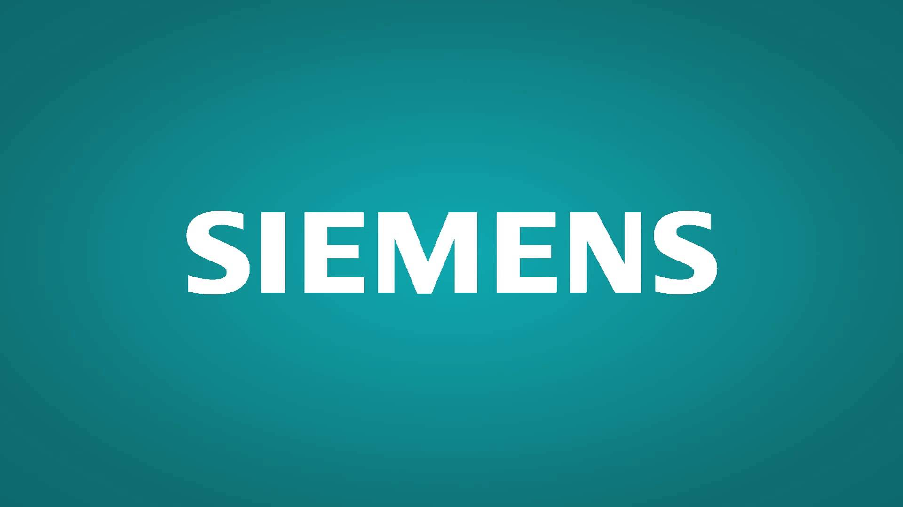
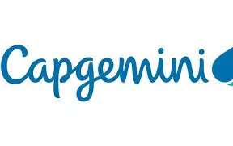
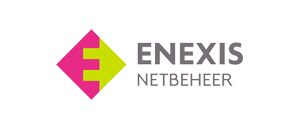

Mendix
Mendix es una plataforma de desarrollo de aplicaciones de bajo código que permite a los usuarios crear aplicaciones empresariales de manera rápida y eficiente. Fue fundada en 2005 y ha ganado popularidad debido a su enfoque en la simplicidad y la velocidad de desarrollo. El uso de Mendix permite a las organizaciones reducir el tiempo y los costos asociados con el desarrollo de software, al mismo tiempo que mejora la colaboración entre los equipos de desarrollo y las partes interesadas del negocio.
Mendix no solo acelera el desarrollo, sino que redefine cómo se construyen soluciones digitales. Su entorno visual permite modelar lógica de negocio, interfaces y flujos sin escribir código extenso, pero también ofrece extensibilidad mediante Java, JavaScript y APIs REST. Además, incluye control de versiones, despliegue automatizado en la nube (Mendix Cloud, AWS, Azure), y herramientas para pruebas unitarias y seguimiento de errores. Empresas como Siemens lo usan para digitalizar procesos industriales, mientras que Zurich lo aplica en seguros personalizados. Mendix también promueve el desarrollo centrado en el usuario, permitiendo prototipos rápidos que se validan con stakeholders antes de pasar a producción.
Low Code
El Low code es un enfoque de desarrollo de software que permite a los usuarios crear aplicaciones utilizando interfaces visuales y configuraciones en lugar de escribir código manualmente. Este enfoque está diseñado para acelerar el proceso de desarrollo y permitir que personas con poca o ninguna experiencia en programación puedan contribuir a la creación de aplicaciones. Las plataformas de low code, como Mendix, ofrecen herramientas y componentes preconstruidos que facilitan la creación de aplicaciones mediante arrastrar y soltar elementos, configurar flujos de trabajo y definir reglas de negocio. Esto no solo reduce el tiempo necesario para desarrollar aplicaciones, sino que también permite una mayor colaboración entre los equipos técnicos y las partes interesadas del negocio.
El desarrollo low code representa una evolución en la ingeniería de software: permite que analistas de negocio, diseñadores UX y desarrolladores colaboren en tiempo real. Las plataformas low code como Mendix incluyen modelado visual de datos, lógica condicional, conectores a bases de datos y servicios externos, y generación automática de interfaces responsivas. Esto reduce la dependencia de ciclos largos de desarrollo y permite iteraciones ágiles. Además, el low code facilita la gobernanza de TI, ya que las aplicaciones pueden auditarse, versionarse y desplegarse con control centralizado. En sectores como banca, salud y logística, el low code ha permitido lanzar soluciones en semanas en lugar de meses.
Ventajas de trabajar con Mendix
Algunas ventajas de trabajar con Mendix incluyen:
- Desarrollo rápido: La plataforma de bajo código permite a los desarrolladores crear aplicaciones en una fracción del tiempo que llevaría con métodos tradicionales.
- Facilidad de uso: Mendix ofrece una interfaz visual intuitiva que facilita la creación y modificación de aplicaciones, incluso para aquellos sin experiencia en programación.
- Colaboración mejorada: La plataforma fomenta la colaboración entre desarrolladores, diseñadores y partes interesadas del negocio, lo que resulta en aplicaciones más alineadas con las necesidades del usuario final.
- Escalabilidad: Las aplicaciones desarrolladas en Mendix pueden escalar fácilmente para satisfacer las demandas crecientes del negocio.
- Integración sencilla: Mendix ofrece capacidades integradas para conectarse con otros sistemas y servicios, facilitando la creación de soluciones completas.
Además de la velocidad y facilidad de uso, Mendix ofrece ventajas como la reutilización de componentes, lo que permite construir bibliotecas de widgets, microflows y layouts que pueden aplicarse en múltiples proyectos. Su motor de reglas de negocio permite definir validaciones complejas sin escribir código, y su sistema de roles garantiza seguridad granular en cada vista, acción o dato. Mendix también incluye herramientas para pruebas automatizadas, integración continua (CI/CD), y monitoreo en tiempo real del rendimiento de las aplicaciones. Esto lo convierte en una solución robusta para empresas que buscan agilidad sin comprometer calidad ni seguridad.
Casos de uso de Mendix
Los casos de uso de Mendix son variados y abarcan diferentes industrias y tipos de aplicaciones. Algunos ejemplos comunes incluyen:
- Aplicaciones empresariales: Mendix se utiliza para desarrollar aplicaciones empresariales personalizadas que abordan necesidades específicas de negocio, como gestión de clientes, seguimiento de inventario, automatización de procesos y más.
- Aplicaciones móviles: La plataforma permite la creación rápida de aplicaciones móviles para iOS y Android, facilitando la movilidad y el acceso a la información desde cualquier lugar.
- Portales web: Mendix se utiliza para construir portales web interactivos que permiten a los usuarios acceder a información, realizar transacciones y colaborar en línea.
- Integración de sistemas: La capacidad de Mendix para integrarse con otros sistemas y servicios facilita la creación de soluciones que conectan diferentes partes de una organización.
Empresas que usan Mendix
  Mendix se ha utilizado para crear soluciones como portales de autoservicio para clientes, sistemas de gestión de activos, plataformas de e-learning y dashboards de análisis en tiempo real. En manufactura, permite digitalizar procesos de mantenimiento predictivo; en salud, facilita el seguimiento de pacientes y la gestión de historiales clínicos; en retail, se usa para crear apps móviles de inventario y promociones personalizadas. Gracias a su capacidad de integración con SAP, Salesforce, Oracle y otros sistemas, Mendix puede actuar como capa de presentación moderna sobre sistemas legacy, extendiendo su funcionalidad sin reemplazarlos.
Recursos de Aprendizaje
Existen varios recursos disponibles para aprender Mendix, incluyendo la documentación oficial, tutoriales en línea, cursos y una comunidad activa de usuarios. Estos recursos pueden ayudar a los desarrolladores a familiarizarse con la plataforma y aprovechar al máximo sus capacidades.
Para dominar Mendix, los desarrolladores pueden comenzar con la Mendix Academy, que ofrece rutas de aprendizaje desde nivel básico hasta avanzado, incluyendo certificaciones oficiales. La documentación técnica cubre desde modelado de datos hasta integración con APIs externas. En YouTube y Udemy hay cursos prácticos con ejemplos reales, y en KeepCoding se exploran casos de uso empresariales. Además, la comunidad de Mendix en foros y Discord es activa y colaborativa, ideal para resolver dudas, compartir extensiones y aprender buenas prácticas. También existen blogs técnicos donde se analizan patrones de diseño, optimización de microflows y estrategias de despliegue.